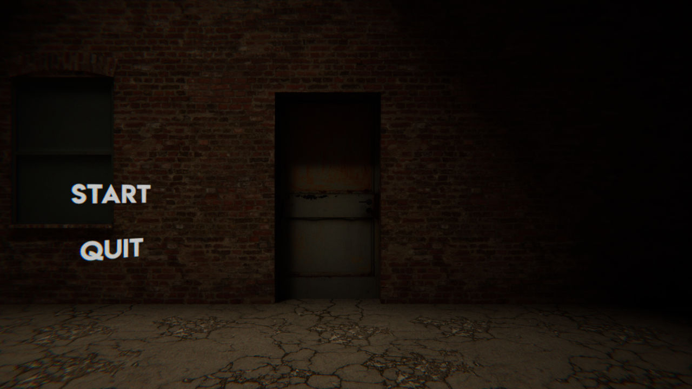
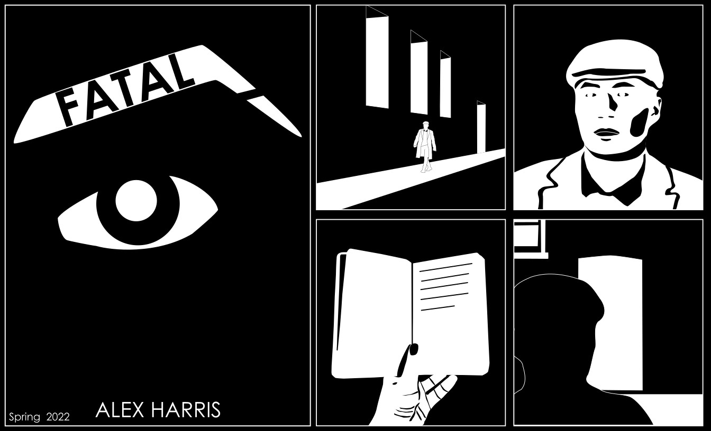
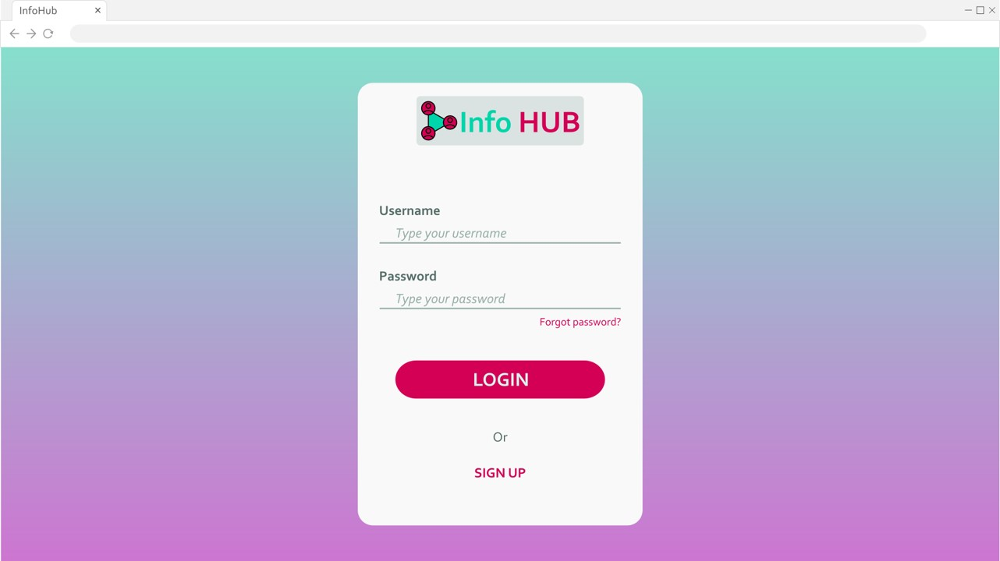
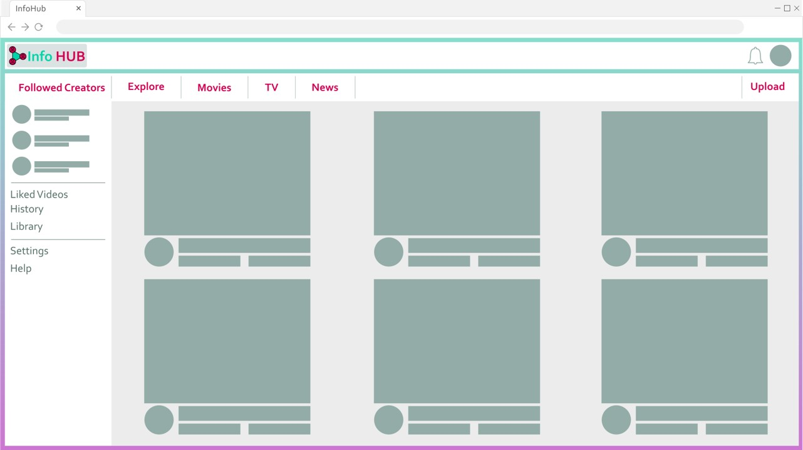
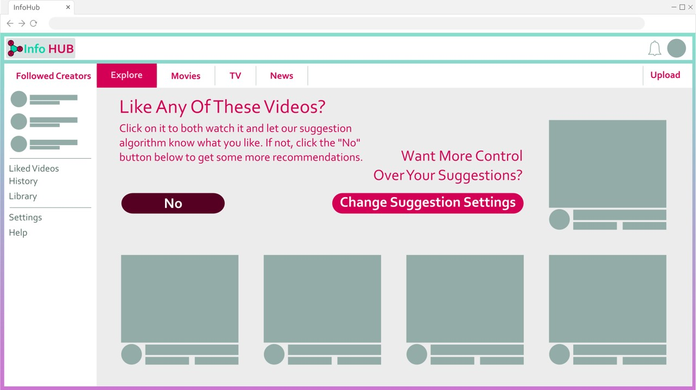
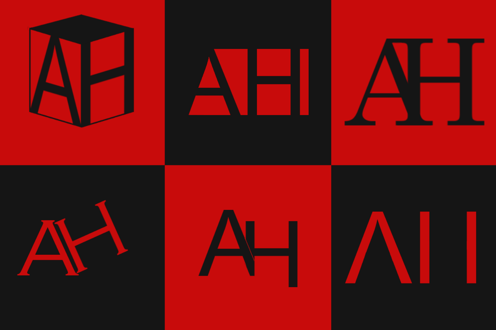

Alex Harris is...
Creating 3D environments
City Alley

Rendered at 3840x2160 in Blender. 2021. Made using images from textures.com.
I am very proud of this render, and I genuinely believe that I have achieved photorealism in some areas of this image, namely the bottom left of the render. Of course, there are plenty of aspects of this render that could use some refinement. I experimented with a couple different textures for the sky, and I wish I had settled on a different one than used in this final render. Throughout this project, I also switched back and forth between having a wall around 20 feet away from the camera that would block the view beyond and having a wall much farther away, and I believe now that this render would have been improved with the presence of a closer wall rather than a semi-infinite alley. I believe the biggest giveaway that this render is CGI is the very obvious repetition in the puddles, the trash bins, and the streetlamps, which all would have been naturally resolved with the inclusion of the closer wall. I also notice now that there are no signs of water anywhere besides the ground, except for maybe on the tile wall on the close right.
View Full Resolution Image
Creepy Hotel Hallway

Rendered at 1920x1080 in Blender. 2021. Made using images from textures.com.
I am quite happy with this render. It is very simplistic, but I think that it does its job at being creepy. This render was inspired by the Silent Hill video game series. Specifically, a level from Silent Hill 2 that takes places in an abandoned hotel.
View Full Resolution Image
Creepy Game Menu
Screenshot of real-time rendering in Unity. 2018. Made using images from textures.com.
This is an old project of mine, for a horror game that I never quite finished, but was supposed to be down a similar vein of horror to Resident Evil. This menu is very simple, but I believe that there is an elegance in simplicity, and as such I am satisfied with this menu.
View Full Resolution Image
Programming Gameplay
Spooky Encounter
Running in real-time in Unity. 2021. Made using images from textures.com and public domain sounds from freesound.org.
This short clip of gameplay comes from an early build of a horror game that I am still working on to this day, which is really not as much of a horror game as it used to be. The game, at the state of this clip, was a psychological horror game inspired by the Amnesia series in a gameplay sense, and Silent Hill 2 in a narrative sense. While (thankfully) not present in this build, there was an enemy in this level that would quietly stalk the player as they explored the level.
Creating Vector Graphics
Comic Strip
Created in Inkscape. 2022. A short, small project created for a digital imaging class.
My main inspiration for this comic strip were some Marvel Noir comics, which were themselves inspired by film noir, among other things. My process while creating this comic strip was finding some reference photos for the character and the environment, and then blocking out the basic shapes on top in order to make sure proportions were accurate. After I had some basic shapes, I took creative control and added more shapes and refined them until I was able to suggest as many details as I could with as few shapes as possible. What I found to be the most difficult about this project was the limitation of only using black and white, as this made it very difficult to differentiate between different objects.
User Interface Concept
  Created in Inkscape. 2022. A project created for an interactive design class.
These are the concept images I created for a fake website called "Info Hub," which would function similarly to YouTube. These concept images are the 2nd iteration of this project after I conducted some user testing. Other than the logo for this project, I am satisfied with how the design of this fake website turned out.
Logo Mockups
Created in GIMP. 2022. A project created for a digital imaging class.
These were some rapid fire logo designs that I made in the span of about an hour. None of them are particularly special, but I like a couple of them. This was less so a logo design project and more so a test to see how many ways I could my combine initials.
Programming Websites
This website has been handcoded from scratch by Alex Harris using nothing but Visual Studio Code. No drag and drop code editors. No site builders. Only HTML 5, JavaScript, and CSS.